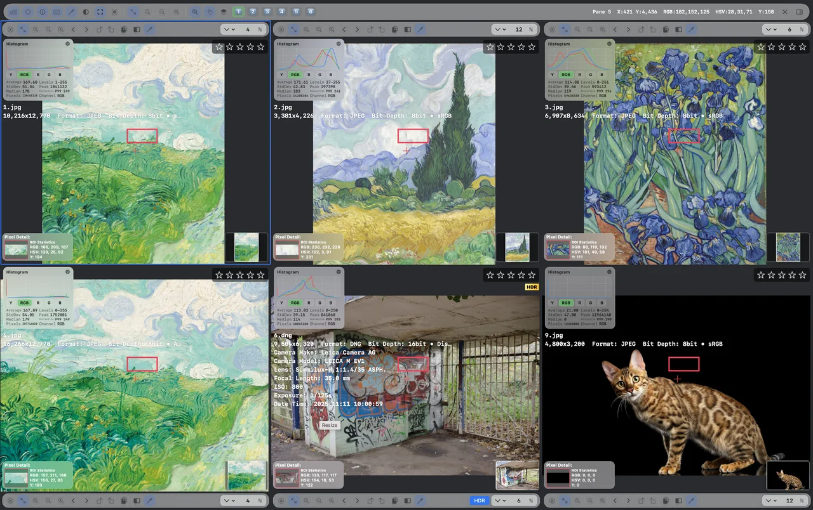
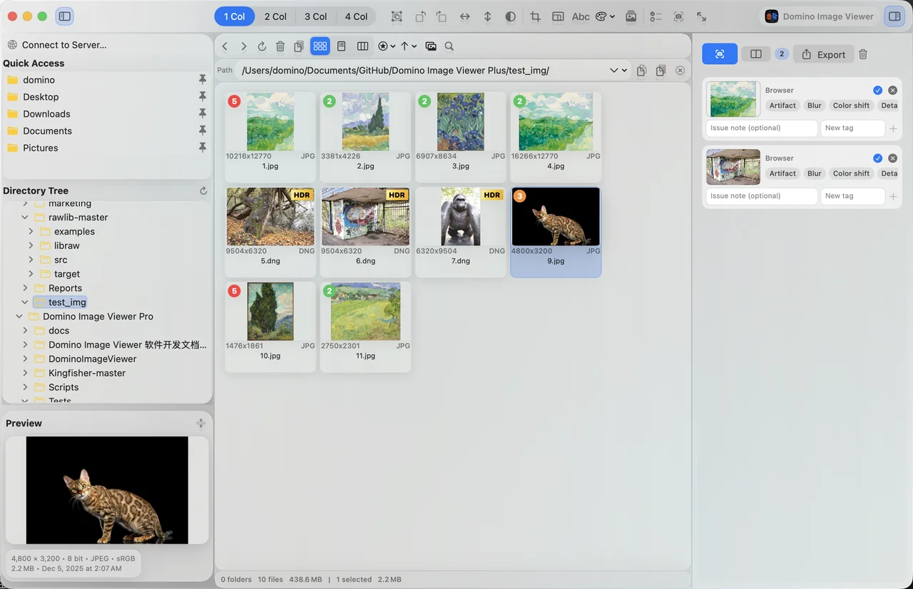
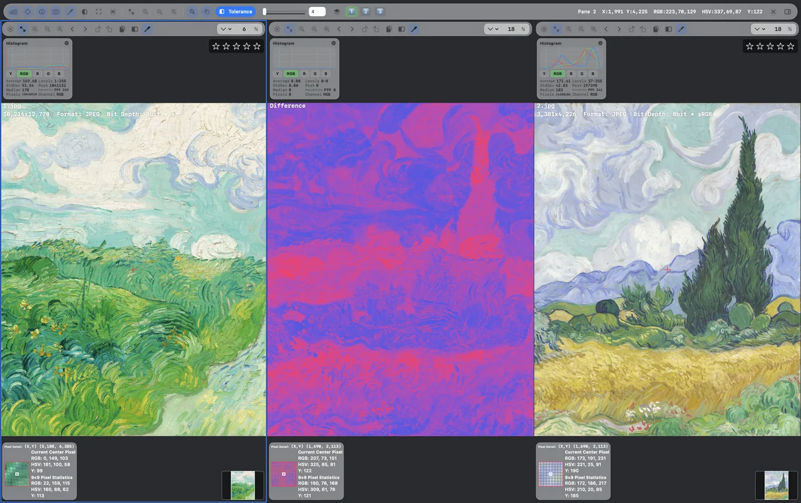
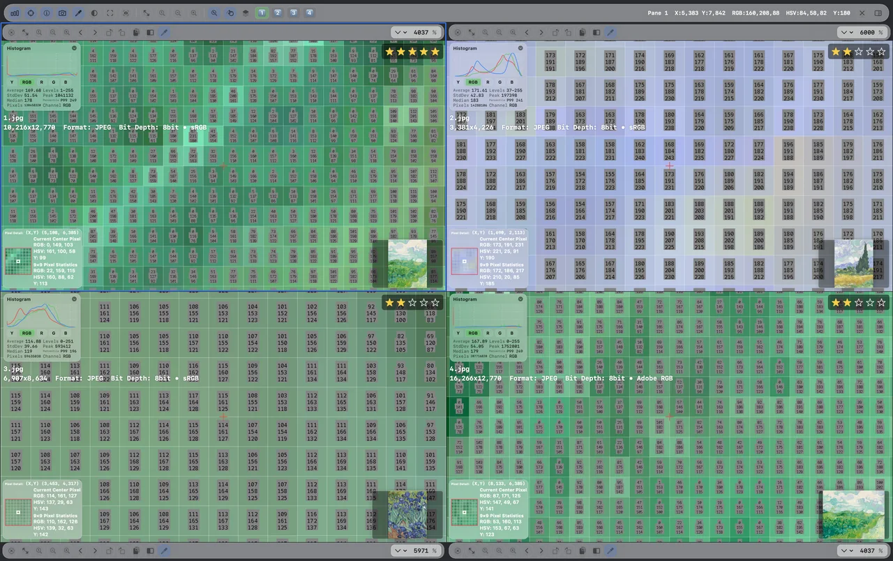
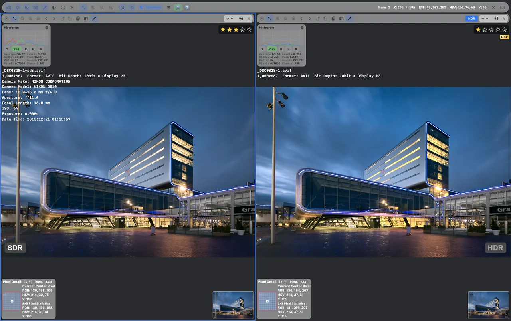
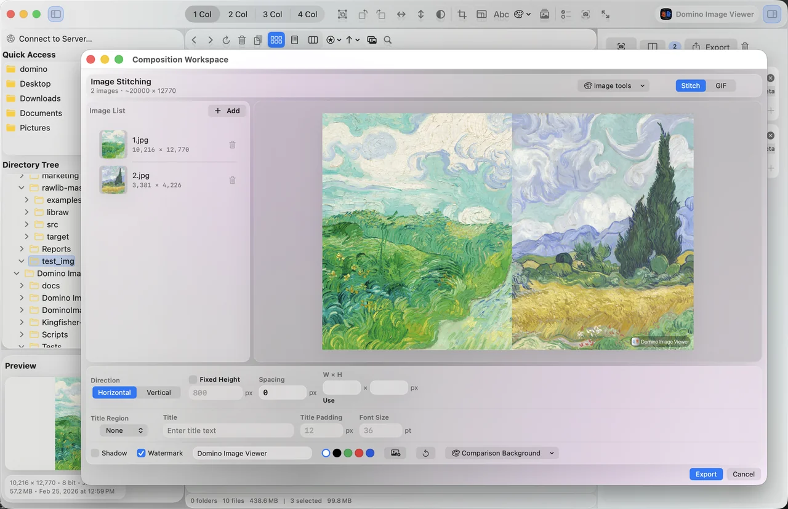
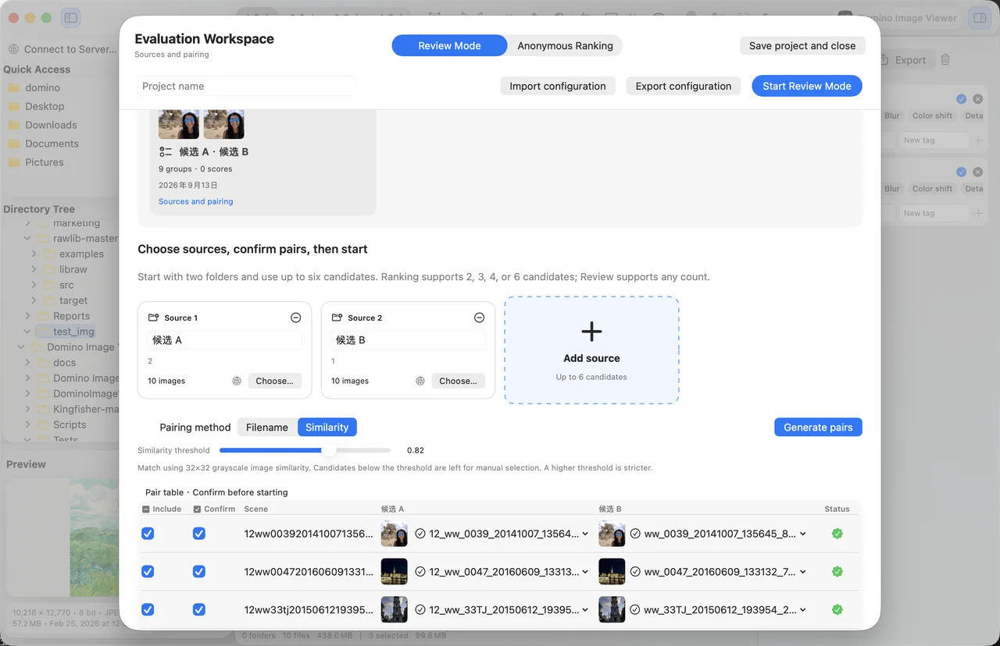
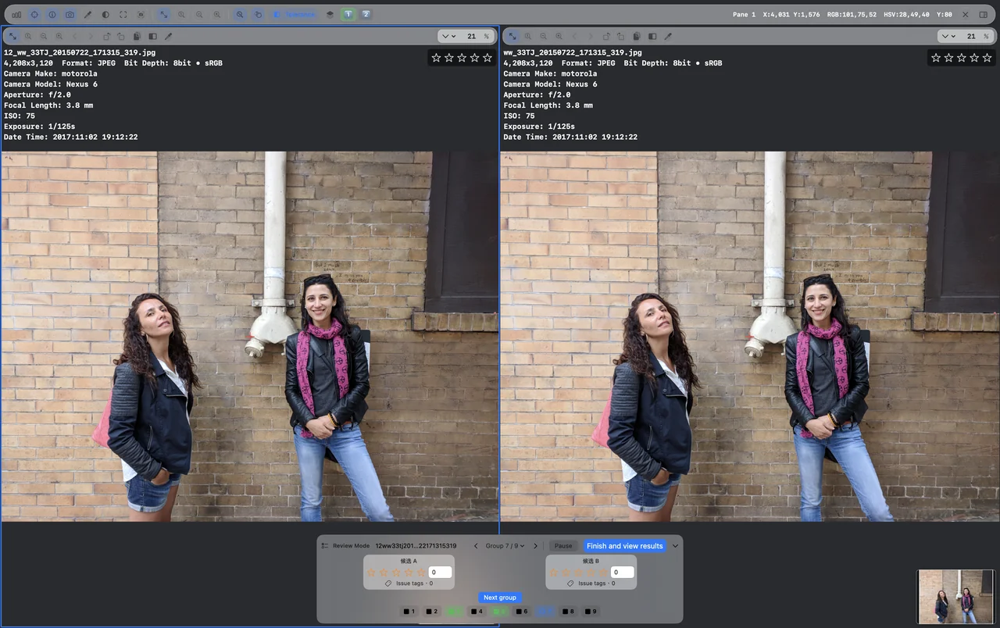
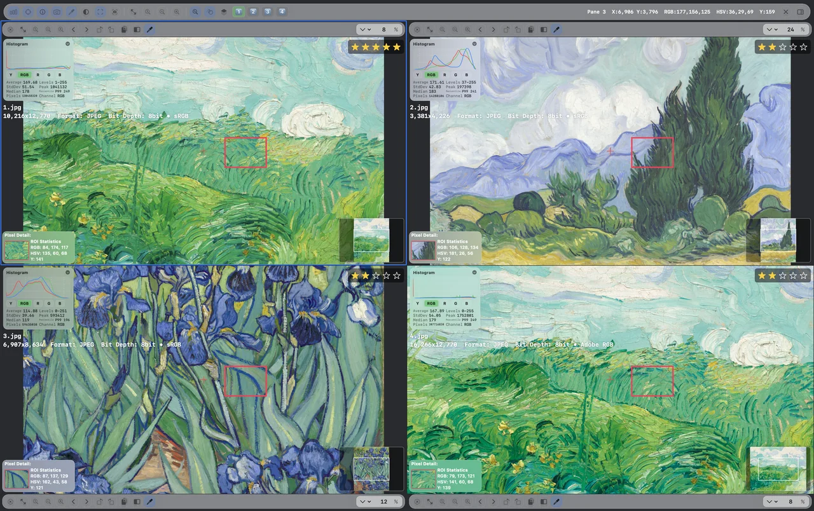

YOUR IMAGE WORKSPACE FOR MAC你的 Mac 图像工作空间MAC の画像ワークスペースTU ESPACIO DE IMÁGENES PARA MAC
New HDR display全新 HDR 显示新しい HDR 表示Nueva visualización HDR
DOMINO IMAGE VIEWER / MAC
See more.
Create better.不止看图。
看见更多可能。もっと見える。
もっと、つくれる。Mira más.
Crea mejor.
From your first favorite to the finest pixel. Browse, compare and create in one powerful Mac workspace.从心仪的一张，到精细的每个像素。浏览、对比与创作，在一个专业 Mac 工作空间里完成。お気に入りの一枚から、繊細なピクセルまで。閲覧、比較、制作を、ひとつの Mac ワークスペースで。De tu foto favorita al detalle de cada píxel. Explora, compara y crea en un solo espacio para Mac.
Discover on the App Store前往 App StoreApp Store で見るVer en el App Store ↗Watch the 30-second film观看 30 秒演示30 秒のデモを見るVer el vídeo de 30 segundos
100+image formats种图片格式画像形式formatos de imagen
2–6synchronized views图同步对比画像を同期比較vistas sincronizadas
HDR+ SDR

Browse & organize浏览与整理閲覧・整理Explorar y organizar

⌖
One workspace. Every detail.一个工作空间。每一处细节。ひとつの空間に、すべての細部を。Un espacio. Todos los detalles.RGB / HSV / ROI
↓Real app. Real possibilities.真实应用界面，让可能性看得见。実際のアプリ画面。広がる可能性。La app real. Posibilidades reales. · English interface demonstration英文界面演示英語インターフェースのデモDemostración con interfaz en inglés
LESS SWITCHING. MORE CREATING.少些切换，多些创作。切り替えを減らして、制作に集中。MENOS CAMBIOS. MÁS CREACIÓN.
Your whole workflow.
Beautifully connected.完整工作流。
自然连在一起。ワークフロー全体を。
ひとつにつなぐ。Todo tu flujo de trabajo.
Perfectamente conectado.
From the first browse to the final review, keep your images and your tools together. Open mixed-format folders, find your favorites and move straight into the details.从打开文件夹到完成最终评审，让图片与工具始终在一起。浏览多种格式，挑出心仪作品，随即深入细节。最初の閲覧から最後のレビューまで、画像とツールをひとつに。さまざまな形式の画像からお気に入りを選び、そのまま細部の確認へ進めます。Desde la primera exploración hasta la revisión final, reúne imágenes y herramientas. Abre carpetas con distintos formatos, elige tus favoritas y examina los detalles.
100+formats, including RAW种格式，覆盖 RAWRAW を含む形式formatos, incluido RAW
2–6synchronized views图同步对比画像を同期比較vistas sincronizadas
HDRa new way to see全新显示模式新しい表示体験una nueva forma de ver
A CLOSER LOOK越看，越清楚。細部まで、見えてくる。UNA MIRADA MÁS ATENTA
Great images. Meet great insight.看见好画面。也看懂它。美しい画像を、深く知る。Grandes imágenes. Más información.
01 — 03
Six images. One clear comparison.
Compare two to six images with synchronized zoom and pan.


Scroll to explore, or choose a view above向下滚动探索，或点击切换视图スクロール、または上の表示を選択Desplázate o elige una vista arriba ↓
IN SYNC. IN MOTION.同步，才更从容。動きも、視点も、ひとつに。EN MOVIMIENTO. EN SINTONÍA.
Same detail.
Every view.同一处细节。
每一张，都看清。同じ細部を。
すべての画像で。El mismo detalle.
En cada vista.
Zoom and pan together. Spend your time comparing images, not finding your place.同步缩放与平移。把时间留给观察，不必在不同图片间反复定位。ズームと移動を同期。位置合わせの手間を減らし、画像の比較に集中できます。Sincroniza el zoom y el desplazamiento. Dedica tu tiempo a comparar imágenes, sin tener que buscar la misma zona.
A BRIGHTER PERSPECTIVE换个视角，看见更多。明るさの、その先へ。UNA PERSPECTIVA MÁS LUMINOSA
Let highlights
come to life.让高光，
更有层次。ハイライトに、
もっと表情を。Da vida
a las altas luces.
Meet HDR display. Switch between HDR and SDR, right inside your image workspace.全新 HDR 显示。在熟悉的工作空间里，自由切换 HDR 与 SDR。新しい HDR 表示。いつものワークスペースで、HDR と SDR を切り替えられます。Descubre la visualización HDR. Alterna entre HDR y SDR sin salir de tu espacio de trabajo.

HDR / SDR
HDR appearance depends on the image and display. This web preview is a standard dynamic range capture.HDR 效果取决于源图像与显示设备。本页使用标准动态范围截图。HDR の見え方は画像とディスプレイによって異なります。このページでは SDR の画面キャプチャを使用しています。El aspecto HDR depende de la imagen y la pantalla. Esta vista web utiliza una captura en rango dinámico estándar.
THOUGHTFULLY EQUIPPED工具齐备，灵感就位。制作に必要なものを、手元に。HERRAMIENTAS BIEN PENSADAS
Small details.
Big possibilities.细节到位。
创作，自有空间。細部へのこだわり。
広がる可能性。Pequeños detalles.
Grandes posibilidades.
Explore the tools that bring your image workflow together.探索让图像工作流更完整的每一个工具。画像のワークフローをつなぐツールをご覧ください。Descubre las herramientas que conectan tu flujo de trabajo.
Explore feature查看功能详情機能の詳細を見るExplorar la función
IMAGE STITCHING WORKSPACE图片拼接工作台画像結合ワークスペースCOMPOSICIÓN DE IMÁGENES
Many images. One finished composition.把多张精彩，拼成一张。複数の画像を、ひとつの作品に。Varias imágenes. Una composición.

REVIEWS / ANONYMOUS RANKING评审模式 / 匿名天梯レビュー / 匿名ランキングREVISIÓN / CLASIFICACIÓN ANÓNIMA
Focus on quality. Reduce bias.专注画质，减少偏见。画質に集中。先入観を減らす。Céntrate en la calidad. Reduce sesgos.

PROFESSIONAL REVIEW WORKSPACE专业评审工作界面プロフェッショナルなレビューESPACIO DE REVISIÓN PROFESIONAL
Inspect. Score. Stay focused.边看边评，判断有据。見ながら評価。判断を記録。Inspecciona. Puntúa. Concéntrate.

REGION OF INTEREST · STATISTICS任意区域 · 图像统计選択領域の統計ESTADÍSTICAS POR REGIÓN
Select a region. See the data.选中一处，读懂细节。領域を選んで、データを読む。Selecciona una región. Consulta los datos.

PRO MODE · HIGH-ZOOM PIXEL GRID专业模式 · 高倍率像素网格プロモード / ピクセルグリッドMODO PRO / CUADRÍCULA DE PÍXELES
Every pixel. In clear detail.放大到像素，细节有数。ピクセルひとつまで、くっきり。Cada píxel. Con todo detalle.
UP TO SIX · SIDE BY SIDE最多六图 · 同步对比最大6枚の同期比較HASTA SEIS IMÁGENES
Six images. One clear comparison.六张同屏。差别，一眼见。6 枚を並べて。違いをひと目で。Seis imágenes. Una comparación clara.
TOLERANCE · DIFFERENCE VIEW两图容差 · 精准对比許容値で差分を比較TOLERANCIA Y DIFERENCIAS
Small changes. Clearly visible.细微差异，清晰呈现。わずかな違いも、はっきりと。Pequeños cambios. Claramente visibles.
NEW · HDR DISPLAY全新 HDR 显示新しい HDR 表示NUEVA VISUALIZACIÓN HDR
Give highlights room to shine.让高光，更有层次。ハイライトに、もっと表情を。Da vida a las altas luces.
Give your images
a space of their own.给你的图片，
一个专属工作空间。あなたの画像に、
専用のワークスペースを。Dale a tus imágenes
su propio espacio.
Domino Image Viewer. Made for your Mac.Domino Image Viewer。为你的 Mac 打造。Domino Image Viewer。あなたの Mac のために。Domino Image Viewer. Hecho para tu Mac.
View on the App Store在 App Store 中查看App Store で見るVer en el App Store ↗Here to help.随时为你提供帮助。いつでも、お手伝いします。Estamos para ayudarte.
Questions, feedback or something not working? Get in touch.使用疑问、功能建议，或遇到问题？欢迎联系。ご質問、ご意見、不具合のご報告など、お気軽にご連絡ください。¿Dudas, sugerencias o algún problema? Ponte en contacto.
UP TO SIX · SIDE BY SIDE最多六图 · 同步对比最大6枚の同期比較HASTA SEIS IMÁGENES
Compare two to six images with synchronized zoom and pan. Keep every version focused on the same detail.从两图到六图，把不同版本放在一起。同步缩放与平移，让目光始终落在同一处细节。2〜6枚の画像を並べ、ズームと移動を同期。同じ位置の細部を比較できます。Compara de dos a seis imágenes con zoom y desplazamiento sincronizados para observar el mismo detalle.
TOLERANCE · DIFFERENCE VIEW两图容差 · 精准对比許容値で差分を比較TOLERANCIA Y DIFERENCIAS
Turn differences between two images into a visual map. Adjust tolerance to focus on changes above your threshold.把两张图片的差异转成可视化差异图。调节容差阈值，聚焦超过阈值的变化。2枚の画像の違いを差分マップで表示。許容値を調整し、しきい値を超える変化に注目できます。Convierte las diferencias entre dos imágenes en un mapa visual. Ajusta la tolerancia para destacar los cambios que superen el umbral.
NEW · HDR DISPLAY全新 HDR 显示新しい HDR 表示NUEVA VISUALIZACIÓN HDR
View HDR images on supported displays. Switch between HDR and SDR to inspect how each mode presents your image.在支持的显示设备上呈现 HDR 图像。随时切换 HDR 与 SDR，查看不同显示模式下的画面。対応ディスプレイで HDR 画像を表示。HDR と SDR を切り替え、表示モードによる違いを確認できます。Visualiza imágenes HDR en pantallas compatibles. Alterna entre HDR y SDR para examinar cada modo.
YOUR IMAGE WORKSPACE FOR MAC你的 Mac 图像工作空间MAC の画像ワークスペースTU ESPACIO DE IMÁGENES PARA MAC
Bring image browsing, precise comparison, and everyday creative tools into one focused Mac workspace.从日常浏览到专业检视，把图片管理、精准对比和常用创作工具，收进同一个工作空间。画像の閲覧、精密な比較、日常の制作ツールを、Mac のひとつのワークスペースに。Reúne la exploración, la comparación precisa y las herramientas creativas en un solo espacio para Mac.
IMAGE STITCHING WORKSPACE图片拼接工作台画像結合ワークスペースCOMPOSICIÓN DE IMÁGENES
Build a layout for your portfolio, comparisons, or sharing. Arrange images, preview the result, and export in one workspace.为作品展示、图像对照和内容分享排好版。在同一个工作台调整布局，预览结果并导出。作品紹介、比較、共有のために画像を配置。レイアウトを調整し、プレビューして書き出せます。Prepara diseños para tu portafolio, comparaciones o publicaciones. Organiza, previsualiza y exporta en un solo lugar.
REVIEWS / ANONYMOUS RANKING评审模式 / 匿名天梯レビュー / 匿名ランキングREVISIÓN / CLASIFICACIÓN ANÓNIMA
Score images in Review Mode or compare them with Anonymous Ranking. Turn individual decisions into saved evaluation projects.用评审模式逐项打分，或用匿名天梯比较优劣。把一次次判断，组织成可保存的评测项目。レビューモードで採点、または匿名ランキングで比較。判断を保存可能な評価プロジェクトにまとめられます。Puntúa imágenes o compáralas de forma anónima. Organiza tus decisiones en proyectos de evaluación guardados.
PROFESSIONAL REVIEW WORKSPACE专业评审工作界面プロフェッショナルなレビューESPACIO DE REVISIÓN PROFESIONAL
Compare images side by side and record decisions in the scoring console. Keep inspection and evaluation in the same flow.并排检视图像，在评分控制台直接记录判断。让看细节、打分与标记问题保持连贯。画像を並べて確認し、採点コンソールで判断を記録。観察と評価をひとつの流れで進められます。Compara imágenes en paralelo y registra tus decisiones en la consola de puntuación. Revisa y evalúa sin interrumpir el flujo.
REGION OF INTEREST · STATISTICS任意区域 · 图像统计選択領域の統計ESTADÍSTICAS POR REGIÓN
Choose any region of interest and inspect its color and luminance data alongside the image. Give visual comparisons more context.在图像中框选你关心的区域，将局部画面与颜色、亮度数据一起检视，让比较更有依据。注目する領域を選択し、色と輝度のデータを画像と一緒に確認。比較の手がかりが増えます。Elige una zona y examina su color y luminancia junto a la imagen para comparar con más información.
PRO MODE · HIGH-ZOOM PIXEL GRID专业模式 · 高倍率像素网格プロモード / ピクセルグリッドMODO PRO / CUADRÍCULA DE PÍXELES
Inspect pixel grids and values at high zoom. Put versions side by side to examine color changes and fine differences.高倍率下直接查看像素网格与数值。将多个版本放在一起，检查色彩变化与细小差异。高倍率でピクセルグリッドと数値を表示。バージョンを並べ、色の変化や細かな違いを確認できます。Examina la cuadrícula y los valores con gran aumento. Compara versiones para detectar cambios de color y diferencias sutiles.